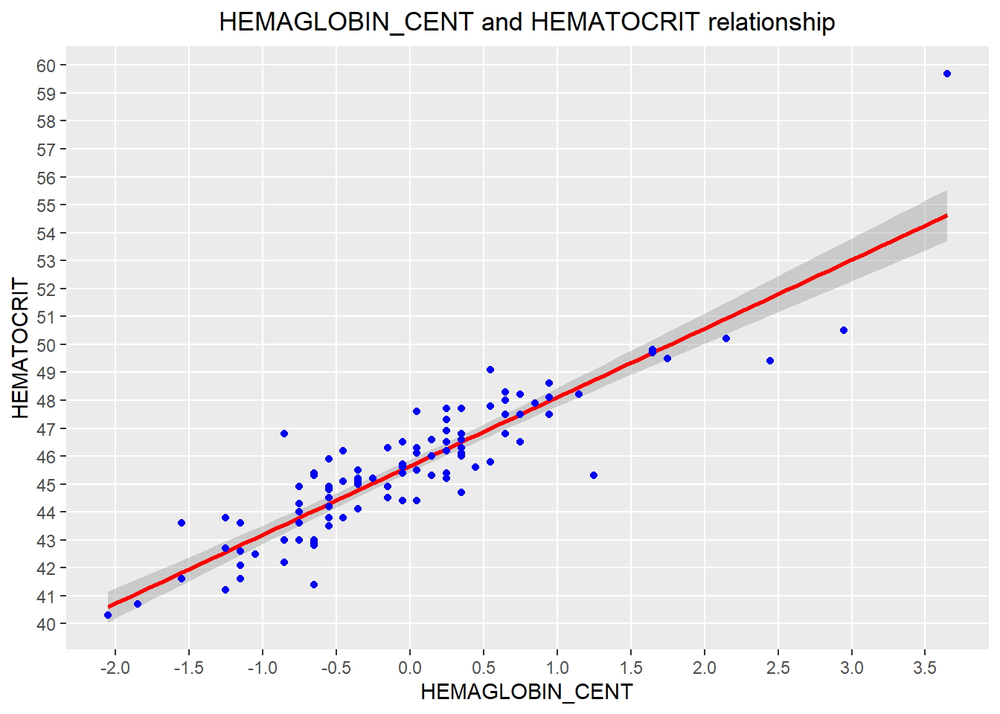
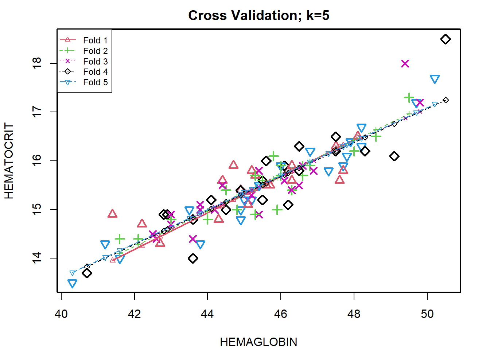

25 de Mayo del 2020 - Jhonatan Montilla
La correlación es una medida estadística que indica la medida en que dos o más variables fluctúan juntas. La correlación positiva indica el grado en que esas variables aumentan o disminuyen en paralelo; La correlación negativa indica el grado en que una variable aumenta a medida que la otra disminuye.
Es un método estadístico para determinar si existe una relación entre dos variables.
La variable de respuesta y la variable explicativa son variables continuas (es decir, números reales con decimales, como alturas, pesos, volúmenes o temperaturas).
Para predecir el valor de una variable de resultado Y basándose en una o más variables predictoras de entrada X.
Objetivo: Establecer una relación lineal (una fórmula matemática) entre la (s) variable (s) predictora (s) y la variable de respuesta, de modo que, podamos usar esta fórmula para estimar el valor de la respuesta Y, cuando solo los valores de los predictores (X) son conocido.
Concentrándose solo en las características de la sangre (dejando de lado el tamaño del cuerpo), el objetivo es construir un modelo de regresión simple que se pueda usar para predecir el hematocrito (hc) estableciendo una relación lineal estadísticamente significativa con la hemaglobina (hg).
Para el análisis actual, se ha utilizado el conjunto de datos AIS que proviene del paquete CRAN DAAG: es un conjunto de datos con 202 observaciones y 13 variables. Representa un estudio sobre un grupo de atletas australianos para predecir el hematocrito (hc) estableciendo una relación lineal estadísticamente significativa con la hemaglobina (hg).
A continuación, se cargan las librerías de R con los conjuntos de datos correspondientes.
library(e1071)
library(plyr)
library(ggplot2)
library(DAAG)data('ais')
# solo atletas masculinos
ais2 <- subset(ais, sex=="m")
# número de columna de subconjunto que corresponde a "hg" y "hc"
ais3 = ais2[,c(3,4)]
newdata <- rename(ais3, c("hg"="HEMAGLOBIN", "hc"="HEMATOCRIT"))
str(newdata)## 'data.frame': 102 obs. of 2 variables:
## $ HEMATOCRIT: num 46.8 45.2 46.6 44.9 46.1 45.1 47.5 45.5 48.6 44.9 ...
## $ HEMAGLOBIN: num 15.9 15.2 15.9 15 15.6 15.2 16.3 15.2 16.5 15.4 ...#descripción general de las dos variables seleccionadas
summary(newdata)## HEMATOCRIT HEMAGLOBIN
## Min. :40.30 Min. :13.50
## 1st Qu.:44.23 1st Qu.:14.93
## Median :45.50 Median :15.50
## Mean :45.65 Mean :15.55
## 3rd Qu.:46.80 3rd Qu.:15.90
## Max. :59.70 Max. :19.20Para predecir el hematocrito (hc) estableciendo una relación lineal estadísticamente significativa con la hemaglobina (hg).
qplot(HEMAGLOBIN, HEMATOCRIT, data = newdata,
main = "HEMAGLOBIN and HEMATOCRIT relationship") +
theme(plot.title = element_text(hjust = 0.5)) +
geom_point(colour = "blue", size = 1.5) +
scale_y_continuous(breaks = c(30:65), minor_breaks = NULL) +
scale_x_continuous(breaks = c(10:25), minor_breaks = NULL)# divide el área del gráfico en dos partes
par(mfrow=c(1, 2))
boxplot(newdata$HEMAGLOBIN, col = "yellow", border="blue",
main = "HEMAGLOBIN boxplot",
ylab = "g per decaliter")
boxplot(newdata$HEMATOCRIT, col = "orange", border="blue",
main = "HEMATROCRIT boxplot",
ylab = "percent values")# Histograma de HEMOGLOBINA
qplot(HEMAGLOBIN, data = newdata, geom="histogram", binwidth=0.5,
fill=I("azure4"), col=I("azure3")) +
labs(title = "HEMAGLOBIN") +
theme(plot.title = element_text(hjust = 0.5)) +
labs(x ="Concentration (in g per decaliter)") +
labs(y = "Frequency") +
scale_y_continuous(breaks = c(0,5,10,15,20,25,30,35,40,45,50), minor_breaks = NULL) +
scale_x_continuous(breaks = c(10:25), minor_breaks = NULL) +
geom_vline(xintercept = mean(newdata$HEMAGLOBIN), show.legend=TRUE, color
="red") +
geom_vline(xintercept = median(newdata$HEMAGLOBIN), show.legend=TRUE, color
="blue")# Histograma de HEMATOCRIT
qplot(HEMATOCRIT, data = newdata, geom="histogram", binwidth=1,
fill=I("azure4"), col=I("azure3")) +
labs(title = "HEMATOCRIT") +
theme(plot.title = element_text(hjust = 0.5)) +
labs(x ="percent values") +
labs(y = "Frequency") +
scale_y_continuous(breaks = c(0,5,10,15,20,25), minor_breaks = NULL) +
scale_x_continuous(breaks = c(30:65), minor_breaks = NULL) +
geom_vline(xintercept = mean(newdata$HEMATOCRIT), show.legend=TRUE, color
="red") +
geom_vline(xintercept = median(newdata$HEMATOCRIT), show.legend=TRUE, color
="blue")# divide el área del gráfico en dos partes
par(mfrow=c(1, 2))
plot(density(newdata$HEMAGLOBIN), main="Density: HEMAGLOBIN", ylab="Frequency",
sub=paste("Skewness:", round(e1071::skewness(newdata$HEMAGLOBIN), 2)))
polygon(density(newdata$HEMAGLOBIN), col="yellow")
plot(density(newdata$HEMATOCRIT), main="Density: HEMATOCRIT", ylab="Frequency",
sub=paste("Skewness:", round(e1071::skewness(newdata$HEMATOCRIT), 2)))
polygon(density(newdata$HEMATOCRIT), col="orange")El objetivo ahora es construir un modelo lineal y ver qué tan bien este modelo se ajusta a los datos observados. En forma simplista, la ecuación a resolver es la siguiente:
La función utilizada para construir modelos lineales es lm (). La función lm () toma dos argumentos principales, a saber:
fórmula
Datos.
Los datos son típicamente un data.frame y la fórmula es un objeto de la clase formula & La convención más común es escribir la fórmula directamente en lugar del argumento.
Hematocrito = β0 + β1 - Hemaglobina Hematocrito = β0 + β1 Hemaglobina
Entonces, la intersección es el valor de hematocrito esperado para el nivel de hemaglobina y la pendiente es el aumento del hematocrito asociado con un aumento de una unidad en el nivel de hemaglobina.
# Muestre la relación creando una línea de regresión
qplot(HEMAGLOBIN, HEMATOCRIT, data = newdata,
main = "HEMAGLOBIN and HEMATOCRIT relationship") +
theme(plot.title = element_text(hjust = 0.5)) +
stat_smooth(method="lm", col="red", size=1) +
geom_point(colour = "blue", size = 1.5) +
scale_y_continuous(breaks = c(30:65), minor_breaks = NULL) +
scale_x_continuous(breaks = c(10:25), minor_breaks = NULL)## `geom_smooth()` using formula 'y ~ x'Nota: Idealmente, la línea de regresión debería estar lo más cerca posible de todos los puntos de datos observados. El suavizado se establece en un nivel de confianza de 0,95 (de forma predeterminada).
Una posibilidad adicional e interesante es crear una nueva variable llamada “HEMAGLOBIN_CENT”, que Centra el valor de la variable HEMAGLOBIN en su media: esto es útil para dar una interpretación significativa de su estimación de intercepto (el nivel promedio de HEMAGLOBIN se centra en el valor 0.0 en el eje X).
set.seed(123)
# centrar la variable
HEMAGLOBIN_CENT = scale(newdata$HEMAGLOBIN, center=TRUE, scale=FALSE)
# Mostrar la relación con la nueva variable centrada, creando una línea de regresión
qplot(HEMAGLOBIN_CENT, HEMATOCRIT, data = newdata,
main = "HEMAGLOBIN_CENT and HEMATOCRIT relationship") +
theme(plot.title = element_text(hjust = 0.5)) +
stat_smooth(method="lm", col="red", size=1) +
geom_point(colour = "blue", size = 1.5) +
scale_y_continuous(breaks = c(30:65), minor_breaks = NULL) +
scale_x_continuous(breaks = c(-2,-1.5,-1,-0.5,0,0.5,1,1.5,2,2.5,3,3.5,4), minor_breaks = NULL)
Las estadísticas de resumen son muy útiles para interpretar los componentes clave de la salida del modelo lineal.
mod1 = lm(HEMATOCRIT ~ HEMAGLOBIN_CENT, data = newdata)
summary(mod1)##
## Call:
## lm(formula = HEMATOCRIT ~ HEMAGLOBIN_CENT, data = newdata)
##
## Residuals:
## Min 1Q Median 3Q Max
## -3.4183 -0.7043 -0.0072 0.6049 5.0765
##
## Coefficients:
## Estimate Std. Error t value Pr(>|t|)
## (Intercept) 45.6500 0.1140 400.35 <2e-16 ***
## HEMAGLOBIN_CENT 2.4605 0.1227 20.06 <2e-16 ***
## ---
## Signif. codes: 0 '***' 0.001 '**' 0.01 '*' 0.05 '.' 0.1 ' ' 1
##
## Residual standard error: 1.152 on 100 degrees of freedom
## Multiple R-squared: 0.801, Adjusted R-squared: 0.799
## F-statistic: 402.4 on 1 and 100 DF, p-value: < 2.2e-16El valor p del modelo (última línea inferior) y el valor p de las variables predictoras individuales (columna del extremo derecho debajo de “Coeficientes”).
un modelo lineal debe ser estadísticamente significativo solo cuando ambos valores p son menores que el nivel de significancia estadística predeterminado, que idealmente es 0.05.
Esto se interpreta visualmente por las estrellas de significado al final de la fila. Cuantas más estrellas estén al lado del valor p de la variable, más significativa será la variable.
En Regresión Lineal, la Hipótesis Nula es que los coeficientes asociados a las variables es igual a cero.
La hipótesis alternativa es que los coeficientes no son iguales a cero (es decir, existe una relación entre la variable independiente en cuestión y la variable dependiente).
Nota: el estadístico t es el valor estimado del parámetro (coeficiente / pendiente) dividido por su error estándar.
Entonces, esta estadística es una medida de la probabilidad de que el valor real del parámetro no sea cero. Un valor t más grande indica que es menos probable que el coeficiente no sea igual a cero por pura casualidad.
Cuando el valor p es menor que el nivel de significancia (<0.05), podemos rechazar con seguridad la hipótesis nula de que el coeficiente β del predictor es cero.
En nuestro caso, Mod lineal, ambos valores p están muy por debajo del umbral de 0.05, por lo que podemos concluir que nuestro modelo es estadísticamente significativo.
# capturar el resumen del modelo como un objeto
modSummary <- summary(mod1)
# coeficientes del modelo
modCoeff <- modSummary$coefficients
# obtener una estimación del coeficiente beta
beta.estimate <- modCoeff["HEMAGLOBIN_CENT", "Estimate"]
# obtener error estándar
std.error <- modCoeff["HEMAGLOBIN_CENT", "Std. Error"]
# calcular la estadística t
t_value <- beta.estimate/std.error
# imprimir valor t
print(t_value)## [1] 20.0601La información real en un dato es la variación total que contiene. R-Squared nos dice que es la proporción de variación en la variable dependiente (respuesta).
Nota: No necesariamente descartamos un modelo basado en un valor de R cuadrado bajo. Es una mejor práctica observar el AIC y la precisión de la predicción en la muestra de validación al decidir sobre la eficacia de un modelo.
Nota: El valor de R cuadrado tiende a aumentar a medida que se incluyen más variables en el modelo. Por lo tanto, la R-cuadrada ajustada es la medida preferida, ya que se ajusta al número de variables consideradas.
Básicamente, la prueba F compara el modelo con cero variables predictoras (el modelo de solo intersección) y sugiere si los coeficientes agregados mejoran el modelo. Si se obtiene un resultado significativo, entonces los coeficientes incluidos en el modelo mejoran el ajuste del modelo.
Entonces, el estadístico F define el efecto colectivo de todas las variables predictoras sobre la variable de respuesta. En este modelo, F = 102,3 es mucho mayor que 1.
# calcular la estadística F
f_statistic <- mod1$fstatistic[1]
# parámetros para el cálculo del valor p del modelo
f <- summary(mod1)$fstatistic
# imprimir valor F
print(f)## value numdf dendf
## 402.4075 1.0000 100.0000El resumen del modelo, así como los gráficos de diagnóstico, han proporcionado información importante que permite mejorar el ajuste del modelo. Junto con mod1, es posible explorar el mod2 que omite los valores atípicos notados.
Nota: por supuesto, se podrían considerar diferentes modelos, es decir, incluir un término cuadrático o agregar una o más variables (o considerar una nueva transformación de variables), pero está fuera del alcance del documento actual (se convierte en un problema de regresión múltiple) .
newdata1 <- setNames(cbind(rownames(newdata), newdata, row.names = NULL),
c("OBS", "HEMAGLOBIN", "HEMATOCRIT"))
# crear condición Sí / No si atípica
newdata1$OUTLIER = ifelse(newdata1$OBS %in% c(159,166,169),"Y","N")
qplot(HEMATOCRIT, HEMAGLOBIN, data = newdata1, colour = OUTLIER,
main = "HEMAGLOBIN and HEMATOCRIT relationship") +
theme(plot.title = element_text(hjust = 0.5)) +
scale_y_continuous(breaks = c(30:65), minor_breaks = NULL) +
scale_x_continuous(breaks = c(10:25), minor_breaks = NULL)Los puntos azules representan los tres valores atípicos identificados.
newdata2 <- subset(newdata1, OBS != 159 & OBS != 166 & OBS != 169,
select=c(HEMAGLOBIN, HEMATOCRIT))
# centrar la variable
HEMAGLOBIN_CENT = scale(newdata2$HEMAGLOBIN, center=TRUE, scale=FALSE)Así se da un nuevo modelo y muestra los siguientes resultados:
mod2 = lm(HEMATOCRIT ~ HEMAGLOBIN_CENT, data = newdata2)
summary(mod2)##
## Call:
## lm(formula = HEMATOCRIT ~ HEMAGLOBIN_CENT, data = newdata2)
##
## Residuals:
## Min 1Q Median 3Q Max
## -0.83224 -0.20845 -0.00573 0.21535 1.19873
##
## Coefficients:
## Estimate Std. Error t value Pr(>|t|)
## (Intercept) 15.51212 0.03656 424.26 <2e-16 ***
## HEMAGLOBIN_CENT 0.35783 0.01687 21.22 <2e-16 ***
## ---
## Signif. codes: 0 '***' 0.001 '**' 0.01 '*' 0.05 '.' 0.1 ' ' 1
##
## Residual standard error: 0.3638 on 97 degrees of freedom
## Multiple R-squared: 0.8227, Adjusted R-squared: 0.8209
## F-statistic: 450.1 on 1 and 97 DF, p-value: < 2.2e-16Los gráficos de diagnóstico se resumen en el siguiente gráfico:
# mostrar un diseño único para todos los gráficos
par(mfrow = c(2,2))
plot(mod2)El criterio de información de Akaike - AIC (Akaike, 1974) y el criterio de información bayesiano - BIC (Schwarz, 1978) son medidas de la bondad de ajuste de un modelo estadístico estimado y también pueden usarse para la selección del modelo. Ambos criterios dependen del valor maximizado de la función de probabilidad L para el modelo estimado.
Nota: Para la comparación de modelos, se prefiere el modelo con la puntuación AIC y BIC más baja.
AIC (linearMod) # AIC => 419.1569 BIC (linearMod) # BIC => 424.8929
Hasta ahora hemos visto cómo construir un modelo de regresión lineal utilizando el conjunto de datos completo. Si lo construimos de esa manera, no hay forma de saber cómo funcionará el modelo con nuevos datos. Entonces, la práctica preferida es dividir su conjunto de datos en una muestra 80:20 (entrenamiento: prueba), luego, construir el modelo en la muestra del 80% y luego usar el modelo así construido para predecir la variable dependiente en los datos de prueba.
Haciéndolo de esta manera, tendremos los valores predichos del modelo para los datos del 20% (prueba) así como los valores reales (del conjunto de datos original). Al calcular las medidas de precisión (como la precisión min_max) y las tasas de error (MAPE o MSE), podemos averiguar la precisión de predicción del modelo. Ahora, veamos cómo hacer esto realmente.
Siga los pasos a continuación que muestro para predecir el modelo lineal.
Paso 1: Cree las muestras de datos de entrenamiento (desarrollo) y prueba (validación) a partir de los datos originales.
set.seed(123)
# entrenamiento y prueba: división 70/30
trainingRowIndex <- sample(1:nrow(newdata2), 0.7*nrow(newdata2))
trainingData <- newdata2[trainingRowIndex, ]
testData <- newdata2[-trainingRowIndex, ]Paso 2: Desarrolle el modelo sobre los datos de entrenamiento y utilícelo para predecir la distancia en los datos de prueba.
# construye el modelo
modTrain <- lm(HEMATOCRIT ~ HEMAGLOBIN, data=trainingData)
# valores predichos
predict <- predict(modTrain, testData)
summary(modTrain)##
## Call:
## lm(formula = HEMATOCRIT ~ HEMAGLOBIN, data = trainingData)
##
## Residuals:
## Min 1Q Median 3Q Max
## -0.85570 -0.20286 0.03222 0.20443 1.22379
##
## Coefficients:
## Estimate Std. Error t value Pr(>|t|)
## (Intercept) -0.43907 0.92072 -0.477 0.635
## HEMAGLOBIN 0.35080 0.02024 17.335 <2e-16 ***
## ---
## Signif. codes: 0 '***' 0.001 '**' 0.01 '*' 0.05 '.' 0.1 ' ' 1
##
## Residual standard error: 0.3711 on 67 degrees of freedom
## Multiple R-squared: 0.8177, Adjusted R-squared: 0.815
## F-statistic: 300.5 on 1 and 67 DF, p-value: < 2.2e-16Paso 3: Revise las medidas de diagnóstico.
act_pred <- data.frame(cbind(actuals=testData$HEMATOCRIT, predicteds=predict))
# precisión de correlación
cor(act_pred)## actuals predicteds
## actuals 1.0000000 0.9156139
## predicteds 0.9156139 1.0000000head(act_pred, n=10)## actuals predicteds
## 1 15.9 15.97825
## 2 15.2 15.41698
## 3 15.9 15.90810
## 10 15.4 15.31174
## 11 16.1 16.32905
## 19 15.4 15.17142
## 20 16.2 16.22381
## 24 15.5 15.87302
## 28 15.6 15.52222
## 35 13.7 13.83839# Los valores reales y los predichos parecen muy cercanos entre sí. Una buena métrica para ver cuánto están cerca es la precisión mínima-máxima, que considera el promedio entre la predicción mínima y máxima.
min_max <- mean(apply(act_pred, 1, min) / apply(act_pred, 1, max))
print(min_max)## [1] 0.9828594mape <- mean(abs((act_pred$predicteds - act_pred$actuals))/act_pred$actuals)
print(mape)## [1] 0.01736733Paso 4: Validación de K-Fold Cross.
Suponga que el modelo predice satisfactoriamente en la división del 20% (datos de prueba), ¿es eso suficiente para creer que su modelo funcionará igualmente bien todo el tiempo? Es importante probar rigurosamente el rendimiento del modelo tanto como sea posible. Una forma es asegurarse de que la ecuación del modelo que tiene funcionará bien, cuando se “construye” en un subconjunto diferente de datos de entrenamiento y se predice sobre los datos restantes.
kfold <- CVlm(data = newdata2, form.lm = formula(HEMATOCRIT ~ HEMAGLOBIN), m=5,
dots = FALSE, seed=123, legend.pos="topleft",
main="Cross Validation; k=5",
plotit=TRUE, printit=FALSE)
# El error cuadrático medio mide cómo una línea de regresión se acerca a un conjunto de puntos
attr(kfold, 'ms')## [1] 0.1354198El valor de 0,13 es bajo y representa un buen resultado de precisión. (Idealmente, cuanto menor sea el error cuadrático medio, más cercana es la línea de mejor ajuste).